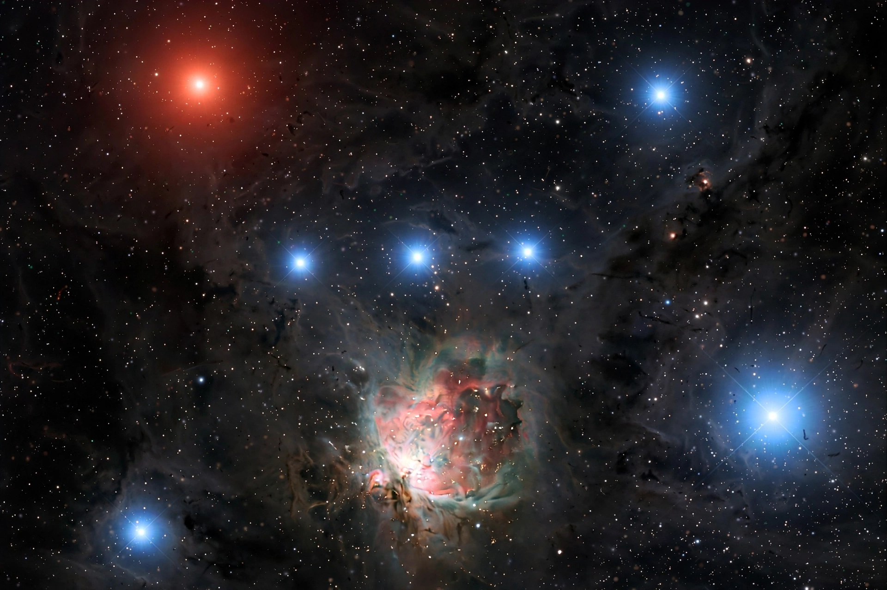

Orion is a prominent constellation on the celestial equator, representing a hunter in Greek mythology. It is one of the most recognisable constellations, visible worldwide during winter evenings in the Northern Hemisphere.
Orion's Belt — Alnitak, Alnilam, and Mintaka — points to Sirius in Canis Major and to Aldebaran in Taurus. Betelgeuse, a red supergiant at the shoulder, contrasts with blue-white Rigel at the foot. Below the Belt hangs the Sword, containing the Orion Nebula (M42), a stellar nursery. The Horsehead Nebula lies near Alnitak.
In Greek myth Orion was a giant hunter placed among the stars after death, pursued eternally by Scorpius, which is why the two constellations are never seen together. Similar hunter figures appear in Egyptian, Babylonian, and many other traditions.
Orion's Belt rises almost due east and sets due west, making it a useful seasonal marker.